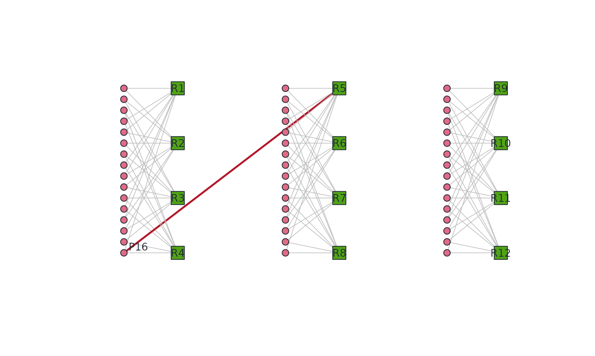
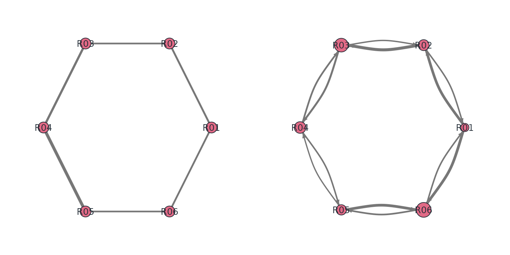
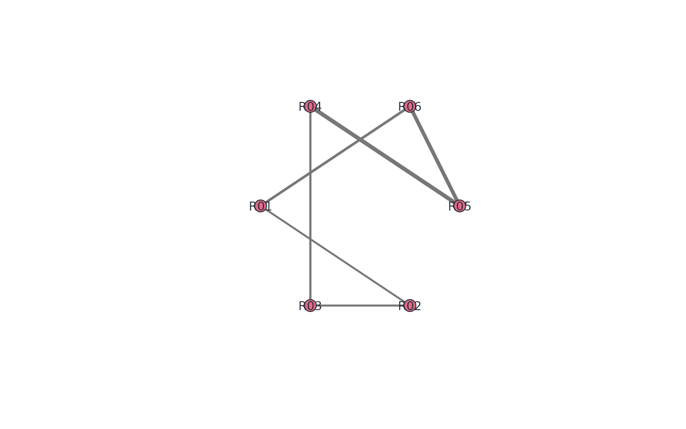
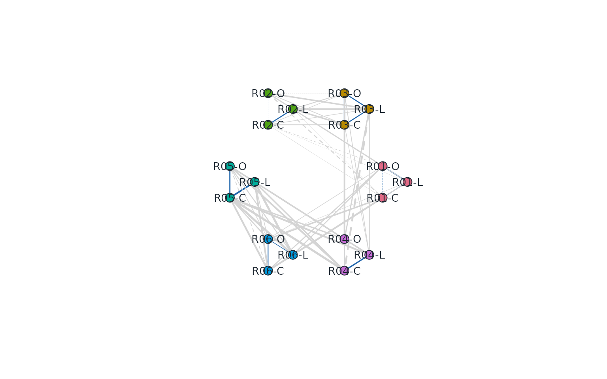

Connect rating designs, network diagnostics and reports
Source:vignettes/mfrmr-networks-and-reporting.Rmd
mfrmr-networks-and-reporting.RmdStart with the decision: can these ratings support the comparison you need, what differs between raters, and what should change in the next assessment? Networks help at different stages. Their nodes and edges determine what they can say; a similar-looking diagram does not make two analyses equivalent.
| Stage and question | Nodes / edges | Connect to |
|---|---|---|
| Before fitting: who is linked to whom? | Person/facet levels; planned or observed co-occurrence counts |
subset_connectivity_report(data = ...) →
mfrm_network_analysis() /
build_mfrm_network_review() → collection/linking
decisions |
| After reviewing the fit: which raters agree or score higher? | Raters; matched observed-score agreement or directional discrepancies |
interrater_agreement_table() →
rater_network_analysis() → examine MFRM severity and
specified bias contrasts |
| Do criteria scored by the same rater co-move? | Rater × criterion profiles; observed-score correlations |
rater_halo_network_analysis() → inspect
within-/between-rater associations and substantive rubric
explanations |
| What remains after the fitted model? | Facet levels; correlations of Person-level mean standardized residuals |
mfrm_residual_network() → exploratory matrix/tree → a
separately justified model or validation study |
| Which external profiles look similar? | One row per entity; declared feature distances |
mfrm_features() → PCA/PAM/k-means/hierarchy → profiles
and sensitivity review |
The first graph does not establish model identification. The next two do not adjust scores for task difficulty or person ability. The residual route depends on the fitted model and aggregation. None is a causal network or proof of latent classes. Fixed criteria in a multivariate G-study are a vector of observed scores, not automatically either MFRM facets or latent dimensions.
Inspect the design before estimating a model
Start with the bundled observed ratings.
facets = "Rater" deliberately shows only person-rater
links; the full MFRM can still contain Criterion.
ratings <- load_mfrmr_data("example_operational")
if (requireNamespace("igraph", quietly = TRUE)) {
observed <- mfrm_network_analysis(data = ratings, person = "Person",
facets = "Rater", score = "Score")
observed$summary
head(observed$source_connectivity$row_usage)
}
#> Row Included Reason
#> 1 1 TRUE Included
#> 2 2 TRUE Included
#> 3 3 TRUE Included
#> 4 4 TRUE Included
#> 5 5 TRUE Included
#> 6 6 TRUE IncludedEach retained row adds one co-observation to each selected pair of facet levels. Repeated rows therefore increase edge counts; they are not independent-person sample sizes. Missing scores do not create observed edges. Known levels in unscored rows remain as isolates. Supply a complete assignment roster to see planned links; levels absent from the supplied file cannot be invented.
The next example constructs a planned assignment, because changing an assignment is the object of this lesson. There are 48 persons and 12 raters in three panels, with two raters per person. One extra rating connects two panels; the third remains separate. It is an illustrative plan, not simulated evidence about estimator performance.
assignment <- do.call(rbind, lapply(1:48, function(i) {
panel <- (i - 1L) %/% 16L
local <- (i - 1L) %% 4L
data.frame(Person = paste0("P", i),
Rater = paste0("R", panel * 4L + c(local + 1L, (local + 1L) %% 4L + 1L)))
}))
linked_assignment <- rbind(assignment, data.frame(Person = "P16", Rater = "R5"))
if (requireNamespace("igraph", quietly = TRUE)) {
before <- mfrm_network_analysis(data = assignment, person = "Person",
facets = "Rater", basis = "planned")
after <- mfrm_network_analysis(data = linked_assignment, person = "Person",
facets = "Rater", basis = "planned")
rbind(Before = before$summary, Added_link = after$summary)
after$bridge_edges[, c("From", "To", "Weight")]
}
#> From To Weight
#> 1 Person:P16 Rater:R5 1Use a common coordinate system rather than letting two graph layouts move nodes independently. This makes the added assignment visible. Node colour identifies facet type; the highlighted line is the added rating, not a significant effect.
if (requireNamespace("igraph", quietly = TRUE)) {
nodes <- after$source_connectivity$nodes
number <- as.integer(sub("^[PR]", "", nodes$Level))
is_person <- nodes$Facet == "Person"
block_size <- ifelse(is_person, 16L, 4L)
panel <- (number - 1L) %/% block_size
coords <- cbind(panel * 3 + ifelse(is_person, 0, 1),
1 - ((number - 1L) %% block_size) / (block_size - 1L))
rownames(coords) <- nodes$Node
edges <- after$source_connectivity$edges
extra <- edges$From == "Person:P16" & edges$To == "Rater:R5"
picture <- plot(after, type = "network", layout = coords,
graphical = list(vertex.shape = ifelse(is_person, "circle", "square"),
vertex.size = ifelse(is_person, 3.5, 7),
vertex.label = ifelse(!is_person | nodes$Level == "P16", nodes$Level, NA),
edge.color = ifelse(extra, "#B2182B", "#BBBBBB"),
edge.width = ifelse(extra, 2.5, .8),
vertex.label.dist = ifelse(is_person, 1.5, 0), asp = 0))
}
Planned person-rater assignments. Columns represent three panels; circles are persons and squares are raters. The red line links P16 to R5. The third panel remains disconnected; the added single link is fragile.
Adding a Criterion level shared by all rows would connect the graph through that node, even though person/rater locations in separate panels may still be confounded. Review both the person-rater projection and the full design; after fitting, inspect the model’s identification audit. A bridge is a vulnerability in the selected graph, not a test of the precision of a particular contrast. Degree counts neighbours; strength sums edge counts. Betweenness counts shortest paths and closeness uses inverse path distances. Here distances are inverse co-observation counts. Disconnected-node closeness is local to reachable nodes, so it should not rank raters across disconnected panels. Centrality is not accuracy, severity or importance to the construct.
Compare score networks with MFRM
Lamprianou (2025) illustrates exact agreement, signed agreement, directed score differences, rater-by-criterion correlations and comparisons with MFRM. Those views motivate the following richer example; the bundled synthetic data are not a replication of that study. Its strong NA–MFRM association is an empirical result, not an identity between a network index and a Rasch parameter. Lamprianou (2018) also investigates fitted exponential random graph models; these descriptive constructors do not fit those models.
if (requireNamespace("igraph", quietly = TRUE)) {
fit <- fit_mfrm(ratings, "Person", c("Rater", "Criterion"), "Score",
method = "JML", maxit = 300)
diagnostics <- diagnose_mfrm(fit, residual_pca = "none")
agreement <- rater_network_analysis(fit, diagnostics, mode = "agreement")
directional <- rater_network_analysis(fit, diagnostics,
mode = "severity_direction", score_diff_tolerance = 0, severity_continuity = .5)
}In the directional graph an arrow goes from the higher-scoring rater
to the lower-scoring rater on shared contexts. This is lenient-to-severe
only when higher scores mean a more favourable performance. The index is
-log((OutStrength + c)/(InStrength + c));
c = .5 is this package’s continuity choice, not the paper’s
uncorrected formula. Missing overlap, tied scores and zero strengths
must remain visible. Never interpret this index as calibrated logits or
turn unavailable values into zero.
if (requireNamespace("igraph", quietly = TRUE)) {
raters <- sort(directional$node_metrics$Rater)
angle <- seq(0, 2*pi, length.out = length(raters) + 1L)[seq_along(raters)]
coords <- cbind(cos(angle), sin(angle)); rownames(coords) <- raters
old <- par(mfrow = c(1, 2), mar = c(1, 1, 1, 1))
plot(agreement, type = "network", layout = coords,
graphical = list(vertex.size = 13))
sev <- directional$node_metrics$SeverityIndex
sizes <- rep(10, length(sev)); ok <- is.finite(sev)
if (any(ok)) sizes[ok] <- 10 + 8 * (sev[ok] - min(sev[ok])) / max(.01, diff(range(sev[ok])))
plot(directional, type = "network", layout = coords,
graphical = list(vertex.size = sizes, edge.curved = .2))
par(old)
comparison <- merge(directional$node_metrics[, c("Rater", "SeverityIndex")],
subset(diagnostics$measures, Facet == "Rater", select = c(Level, Estimate, SE)),
by.x = "Rater", by.y = "Level", all = TRUE)
comparison
}
Observed agreement (left) and directional discrepancies (right), with the same rater positions. Edge widths represent the relevant proportions. In the right panel larger nodes have higher network severity indices, not greater statistical significance.
#> Rater SeverityIndex Estimate SE
#> 1 R01 -0.38260697 -0.64335896 0.1945869
#> 2 R02 -0.08004271 -0.35687808 0.1797840
#> 3 R03 0.23515170 0.37432053 0.1954466
#> 4 R04 0.00000000 0.23506014 0.2034984
#> 5 R05 -0.14996859 0.03222081 0.2226887
#> 6 R06 0.36066697 0.35863557 0.2423906Report the context keys, pair overlap, score-difference tolerance and
weighting. min_weight in the constructor changes the
calculated network. To reduce visual clutter without changing its
statistics, use the plot argument display_min_weight. This
follows the distinction between calculation and illustration in
Lamprianou’s figures. Three further questions now connect to these same
results:
if (requireNamespace("igraph", quietly = TRUE)) {
signed <- rater_network_analysis(fit, diagnostics,
weight_metric = "KrippendorffAlpha", alpha_level = "interval")
signed$pair_metrics[, c("Rater1", "Rater2", "N", "KrippendorffAlpha", "AlphaStatus")]
plot(signed) # Negative agreement uses dashed edges; undefined pairs stay NA.
magnitude <- rater_network_analysis(fit, diagnostics,
mode = "severity_direction", weight_metric = "DirectionalMagnitude",
severity_continuity = 0)
magnitude$network_fit
}
#> Rater Partners Comparisons OutStrength InStrength SeverityIndex
#> R01 R01 2 46 1.1468254 0.5277778 -0.7760776
#> R02 R02 2 54 0.9807692 0.8049451 -0.1975632
#> R03 R03 2 49 0.7040134 1.0351171 0.3854724
#> R04 R04 2 46 0.5652174 0.6956522 0.2076394
#> R05 R05 2 43 0.7608696 0.5108696 -0.3983476
#> R06 R06 2 38 0.5277778 1.1111111 0.7444405
#> SWS PUS SWSStatus PUSStatus
#> R01 0.003744078 0.15184083 available available
#> R02 -0.184430101 0.16533707 available available
#> R03 -0.164246173 0.16453535 available available
#> R04 -0.302664967 0.10018904 available available
#> R05 -0.229340583 0.09652647 available available
#> R06 0.161693000 0.14737654 available availablePairwise alpha adjusts agreement for the pair’s own score marginals.
It is neither Pearson correlation nor the multi-rater alpha for the
whole panel. Negative alpha remains negative. Zero agreement does not
draw an edge; undefined agreement is unavailable, not zero. Ordinal
alpha needs an explicit category order. SignedStrength
distinguishes positive from negative ties; path centralities are
withheld for signed alpha.
DirectionalMagnitude weights a comparison by the
size of its score difference. The default directional
network instead counts how often a rater scores higher. The
network_fit table implements Lamprianou’s equations 1–3:
raw network severity, SWS and PUS, calculated before graph filtering.
SWS can be negative; undefined strength ratios stay unavailable.
Multiplying all scores by a positive constant leaves severity unchanged
but changes SWS and PUS. Report score units/range and never apply Rasch
MnSq cutoffs to them. Use mfrm_report(magnitude) to retain
the indices, definitions and caveats.
if (requireNamespace("igraph", quietly = TRUE)) {
halo <- rater_halo_network_analysis(fit, diagnostics, method = "spearman",
alpha = 1, min_pair_n = 5, positive_only = FALSE)
nodes <- halo$node_metrics
raters <- unique(nodes$Rater); criteria <- unique(nodes$Criterion)
center <- 2*pi*(match(nodes$Rater, raters) - 1)/length(raters)
corner <- 2*pi*(match(nodes$Criterion, criteria) - 1)/length(criteria)
coords <- cbind(3*cos(center) + .65*cos(corner), 3*sin(center) + .65*sin(corner))
rownames(coords) <- nodes$Node
within_rater <- halo$edge_metrics$EdgeType == "halo"
plot(halo, type = "network", layout = coords,
graphical = list(vertex.label = paste(nodes$Rater, substr(nodes$Criterion, 1, 1), sep = "-"),
vertex.size = 10, vertex.label.cex = .85,
edge.color = ifelse(within_rater, "#2166AC", "#D4D4D4"),
edge.width = .3 + 2.5 * abs(halo$edge_metrics$SignedWeight)))
halo$halo_summary_by_rater
}
Rater-by-criterion observed-score network. Nodes are grouped by rater (C: Content, L: Language, O: Organization); blue lines join criteria scored by the same rater and grey lines join different raters. Width shows correlation magnitude; dashed lines indicate negative correlations. Correlation does not identify a causal halo effect.
#> Rater ExpectedHaloPairs UnavailableHaloPairs ExpectedIncidentNonHaloPairs
#> 1 R03 3 0 45
#> 2 R01 3 0 45
#> 3 R05 3 0 45
#> 4 R02 3 0 45
#> 5 R06 3 0 45
#> 6 R04 3 0 45
#> UnavailableIncidentNonHaloPairs UnavailableIncidentPValues HaloPairs
#> 1 27 27 3
#> 2 27 27 3
#> 3 27 27 3
#> 4 27 27 3
#> 5 27 27 3
#> 6 27 27 3
#> RetainedHaloEdges RetainedHaloShare MeanHaloWeight MeanRetainedHaloWeight
#> 1 3 1 0.4464282 0.4464282
#> 2 3 1 0.3003553 0.3003553
#> 3 3 1 0.5122876 0.5122876
#> 4 3 1 0.1556369 0.1556369
#> 5 3 1 0.3287357 0.3287357
#> 6 3 1 0.2838713 0.2838713
#> MaxHaloWeight MeanSignedHaloWeight IncidentNonHaloPairs
#> 1 0.5897645 0.4464282 18
#> 2 0.4564516 0.2724915 18
#> 3 0.7113284 0.5122876 18
#> 4 0.4004971 0.1457486 18
#> 5 0.5121024 0.3287357 18
#> 6 0.5196888 0.2838713 18
#> MeanIncidentNonHaloWeight HaloMinusIncidentNonHalo HaloRatioIncident
#> 1 0.3867314 0.05969686 1.1543626
#> 2 0.2683811 0.03197415 1.1191371
#> 3 0.5865107 -0.07422303 0.8734498
#> 4 0.2624900 -0.10685309 0.5929251
#> 5 0.4483916 -0.11965591 0.7331442
#> 6 0.5307416 -0.24687028 0.5348578
#> ReviewStatus
#> 1 review
#> 2 review
#> 3 review
#> 4 review
#> 5 review
#> 6 review
#> ReviewReason
#> 1 Mean halo weight 0.446; incident non-halo mean 0.387; halo contrast 0.060; retained halo edges 3/3. The same-rater or other-rater comparison is incomplete; absence of a flag is not evidence against halo. 27 incident pair p-value(s) are unavailable. The p filter was disabled; retained edges are descriptive.
#> 2 Mean halo weight 0.300; incident non-halo mean 0.268; halo contrast 0.032; retained halo edges 3/3. The same-rater or other-rater comparison is incomplete; absence of a flag is not evidence against halo. 27 incident pair p-value(s) are unavailable. The p filter was disabled; retained edges are descriptive.
#> 3 Mean halo weight 0.512; incident non-halo mean 0.587; halo contrast -0.074; retained halo edges 3/3. The same-rater or other-rater comparison is incomplete; absence of a flag is not evidence against halo. 27 incident pair p-value(s) are unavailable. The p filter was disabled; retained edges are descriptive.
#> 4 Mean halo weight 0.156; incident non-halo mean 0.262; halo contrast -0.107; retained halo edges 3/3. The same-rater or other-rater comparison is incomplete; absence of a flag is not evidence against halo. 27 incident pair p-value(s) are unavailable. The p filter was disabled; retained edges are descriptive.
#> 5 Mean halo weight 0.329; incident non-halo mean 0.448; halo contrast -0.120; retained halo edges 3/3. The same-rater or other-rater comparison is incomplete; absence of a flag is not evidence against halo. 27 incident pair p-value(s) are unavailable. The p filter was disabled; retained edges are descriptive.
#> 6 Mean halo weight 0.284; incident non-halo mean 0.531; halo contrast -0.247; retained halo edges 3/3. The same-rater or other-rater comparison is incomplete; absence of a flag is not evidence against halo. 27 incident pair p-value(s) are unavailable. The p filter was disabled; retained edges are descriptive.alpha = 1 here avoids a significance filter; counts and
unavailable pairs are still reviewed. Same-rater correlations can
reflect real trait covariance, range restriction and rubric overlap. The
package preserves descriptive within-/between-rater comparisons. For
uncertainty, resample persons, keeping all their
criteria, raters and repeated contexts together:
halo_ci <- rater_halo_network_analysis(fit, diagnostics, alpha = 1,
positive_only = FALSE, bootstrap = 999, seed = 47,
halo_reference = "different_criteria")
halo_ci$halo_contrast
halo_ci$bootstrap_draws # All attempts, including undefined fixed-pair draws.
mfrm_report(halo_ci)The contrast averages signed within-rater cross-criterion
correlations and subtracts the between-rater cross-criterion mean.
halo_reference = "all" includes same-criterion reference
edges, as in the paper’s descriptive comparison. These are different
targets. Check the criterion-pair mix and shared-person counts in
contrast_pairs; neither automatically balances a sparse
design. The contrast uses unfiltered correlations, so display or
significance filtering does not select its target.
Intervals are approximate and conditional on the observed
raters/criteria and pair set. They require independent, representative
person clusters and enough variation. This sparse example can produce
undefined bootstrap correlations; the returned status is then
incomplete_bootstrap, with an unavailable interval and the
failure denominator retained. Increasing resamples does not repair poor
overlap. Inspect the design and report the limitation. An
independent-edge Welch test is not an alternative: edges share raters
and persons. Residual networks instead ask what remains after the fitted
model and are documented in ?mfrm_residual_network; they
cannot automatically establish causal halo either.
Model network configurations with ERGM
Use ERGM when the research question concerns the network: for example, whether leniency ties are reciprocated, or whether a supplied rater attribute is associated with ties after accounting for network structure. This does not replace the MFRM or convert its severity into a network coefficient.
# An explicit tie definition: pairwise interval alpha > 0.35.
# Missing pairs are modeled only under an ignorable missingness assumption.
model <- fit_rater_network(signed, ~ edges, threshold = 0.35,
missing = "model", seed = 48, gof = ~ degree,
gof_control = ergm::control.gof.ergm(nsim = 199, seed = 49))
model$dyads # NA is unobserved; 0 is an observed non-tie.
model$coefficients
model$diagnostics
plot(model, type = "gof")
report <- mfrm_report(model)
export_summary_appendix(report, output_dir = "network-report", prefix = "ergm")The six-rater example is a demonstration of data handoff, not
evidence that a complex ERGM is estimable. For a substantively supported
directed network, ~ edges + mutual asks about reciprocal
ties; exogenous node covariates can be supplied as
node_data with a unique Node column, then
referenced by terms such as nodecov("Experience"). More
complex terms can require MCMC: inspect
ergm::mcmc.diagnostics(model$fit) for mixing and effective
sample size, then simulated GOF. A returned object is not an automatic
convergence certificate. The original backend object is retained for
further diagnostics.
Both edges and non-edges must be observed. No overlap or an undefined
alpha is not a non-edge. By default the wrapper refuses
such data; the explicit missing = "model" option assumes
ignorable missingness, which may be implausible for informative
assignment or constant scores. Binarization uses all eligible pair
values before graph filtering. Report its metric, cutoff, strict
inequality, overlap rule and missingness assumption. Compare plausible
thresholds as sensitivity analyses, not by minimizing AIC across
different response networks. The wrapper does not fit valued/signed
ERGMs or propagate uncertainty in estimated pairwise edges.
All three network routes now connect to mfrm_report()
and export_summary_appendix(). They preserve full pair/dyad
tables, unavailable states and calculation settings. For custom figures
use plot_data(plot(x, draw = FALSE)),
x$bootstrap_draws, or x$gof_draws; draws are
in long form. Your methods and results still need the substantive
question, rater sampling, rubric direction, missingness, the declared
network definition and a reasoned interpretation. A large contrast alone
is not evidence of causal halo.
Connect to a manuscript, not a coefficient inventory
Use the reporting guide to choose modules by question. The following primary-source examples explain why those modules belong together. They are examples of reporting practice, not universal rules.
| Source examined | Reported evidence | Connection and qualification |
|---|---|---|
| FACETS Table 7 and reliability help | Facet measures/errors, fit, separation/strata/reliability, and separate agreement statistics |
diagnose_mfrm() → mfrm_results() →
mfrm_report(); declare Model/Real and sample/population
conventions. Rater separation reliability concerns distinguishable
severities, not agreement. |
ConQuest show and technical manual |
Parameter estimates/errors/fit, population distributions/reliability, maps, thresholds, and model-comparison information | Use fitted-model summaries, category curves and
compare_mfrm() together. ConQuest MML fit definitions are
not the package’s EAP plug-in summaries; match model, score coding,
constraints and estimator before numerical comparison. |
| Koizumi et al. (2019), speaking, Tables 4–9 and Wright map | Facet means/SD/SE, separation/strata/reliability; fit, agreement and categories; task variance and absolute-decision D-studies | Their MFRM used three facets; their G-study used person × task, with single/averaged rater scores. This is a declared change of unit and target, not an automatic conversion of a fitted object. |
| Lin Chun & Xiao Yunnan (2018), EFL writing, Tables I–VI | Variance components/SE/percentages; G across rater counts; rater severity/fit and rater-by-dimension/person bias | Combine planning with specified bias questions. This conference study used a score-stratified sample and one writing topic. Its sufficient-rater count and unadjusted bias thresholds do not generalize to other rubrics, populations or multiplicity policies. |
The two studies used different scoring designs. In a combined manuscript, record separately for MFRM and G/D: input rows and retained persons, the observed or latent target, facets, aggregation, weights, sampling universe, and direction. Explain why each analysis answers a different part of the assessment question. For example: MFRM locates specific severity/misfit patterns; a G-study partitions variation in an explicitly defined observed score; a D-study projects its error under specified future counts. G/Phi are not additional independent validations of a Rasch reliability coefficient. Rasch-adjusted person estimates do not become raw G-study observations merely by putting them in a column named Score.
Copy templates/gpcm-report.Rmd and/or
templates/gtheory-report.Rmd from
system.file("templates", package = "mfrmr"). Their tables
are editable, not mandatory journal layouts. The GPCM report includes
optional paired-kappa code. For linking, retain the anchor source/scale,
fixed-versus-estimated status and drift review. For bias, report signed
effects, cell support, multiplicity and uncertainty, not just a list of
flagged raters. For model comparison, retain the
comparable-data/likelihood decision, changes in substantive estimates
and unavailable tests. Those modules are linked from the reporting
guide; the GPCM example does not claim to execute every one of them.
Export values and choose your own graphics
plot_data(picture, "nodes"),
plot_data(picture, "edges") and
plot_data(picture, "coordinates") provide editable graph
data. source_edges keeps the calculated graph when the
picture is filtered. Graph views do not automatically convert with
as_ggplot(); use these tables with your chosen graph
library. For matrices, use
plot_data(p, "matrix", format = "long"); for a wide table,
select explicit value_cols with
format = "long". Missing cells and identifiers remain. A
long table does not make unlike quantities comparable.
write.csv(plot_data(picture, "nodes"), "design-nodes.csv", row.names = FALSE)
write.csv(plot_data(picture, "source_edges"), "design-edges.csv", row.names = FALSE)
saveRDS(list(network = after, plot = picture), "design-review.rds")
# For a fitted clustering result:
raw <- plot_data(groups, "observations", type = "profile", feature = "ExperienceYears")
write.csv(raw, "feature-observations.csv", row.names = FALSE)The feature
lesson shows an editable raincloud plot from the new
observations component. It retains individual values,
cluster membership, missingness and inclusion. Parameter summaries, SEs
and interval bounds are not raw replicates or posterior draws. Do not
draw their density as if they were. Raw repeated rating rows are also
not independent persons. Keep analysis objects as RDS alongside CSVs to
retain types, settings and interpretation notes.
References
- Lamprianou, I. (2025). Network analysis for the investigation of rater effects in language assessment: A comparison of ChatGPT vs human raters. Research Methods in Applied Linguistics, 4, 100205. https://doi.org/10.1016/j.rmal.2025.100205.
- Lamprianou, I. (2018). Investigation of rater effects using social network analysis and exponential random graph models. Educational and Psychological Measurement, 78, 430–459. https://doi.org/10.1177/0013164416689696.
- Koizumi, R., Kaneko, E., Setoguchi, E., In’nami, Y., & Naganuma, N. (2019). Examination of CEFR-J spoken interaction tasks using many-facet Rasch measurement and generalizability theory. Papers in Language Testing and Assessment, 8(2), 1–33. https://doi.org/10.58379/BSWY7332.
- Lin Chun & Xiao Yunnan (2018). A study on rater reliability under holistic and analytic scoring of CEPT writing by using generalizability theory and many-facet Rasch model. Proceedings of EMLE 2018, 1013–1019. https://doi.org/10.2991/emle-18.2018.201.
- FACETS: Table 7 and reliability, separation and strata.
- ACER ConQuest: output commands and technical description.